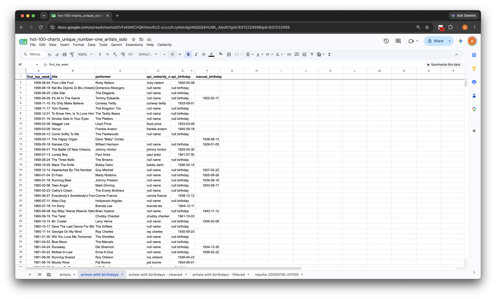
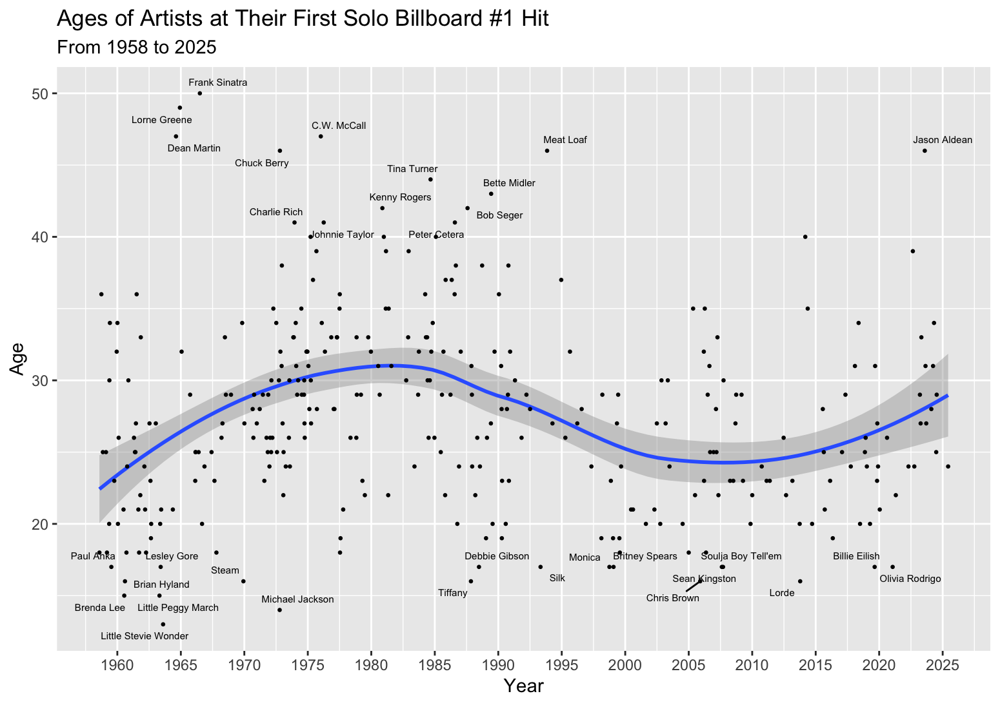
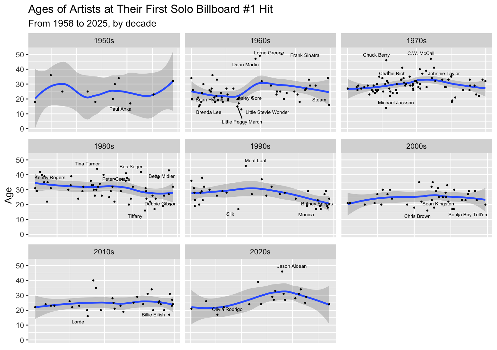
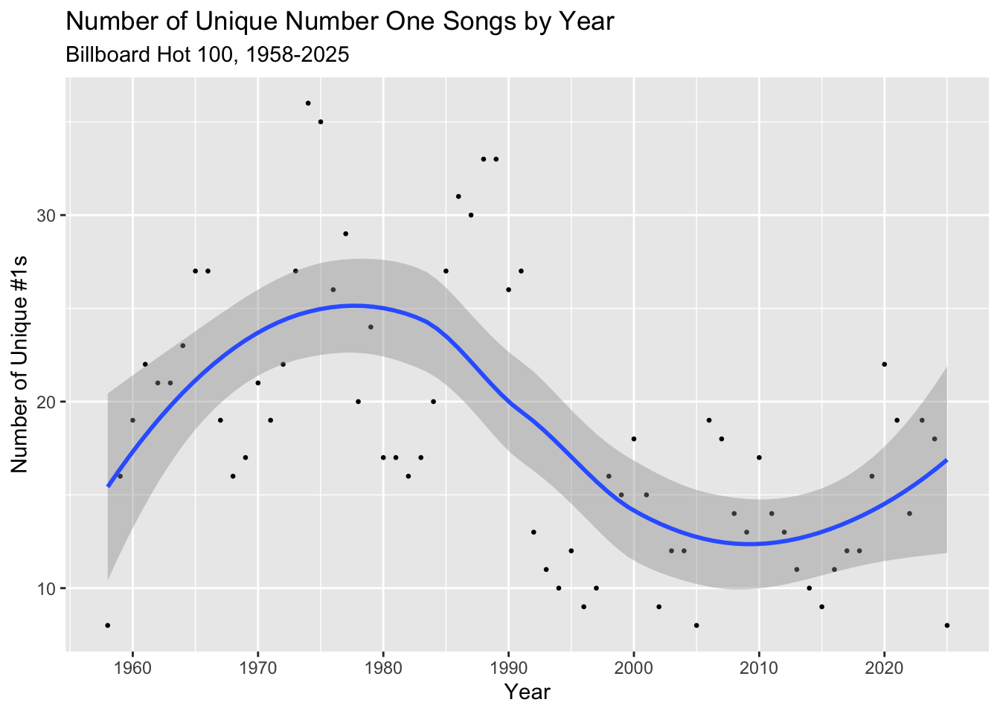

The Billboard Hot 100 has been the quintessential music chart that ranks the 100 most popular songs in the United States, updated every week. In this analysis, I explored how the ages of artists when they achieved their first solo number-one hit have changed since the chart's inception in 1958. “Solo” means there are no bands, features, or collaborations in the analyzed data.

Google Sheets and SQL were the main tools for cleaning and formatting the data; the Billboard data was filtered to show the songs at the #1 each week, and then further filtered to show each artist's first #1 song. To obtain purely solo artists, strings such as “Featuring,” “&,” “+,” among other connectors were filtered out from the remaining rows.
Billboard chart data was obtained via CSV from UT-Austin School of Journalism and Media (GitHub), and artist info was gathered from API Ninjas's Celebrity API.
There are some artists that may seem out of place in the data. For example, it shows Frank Sinatra as the oldest data point, achieving his “first” #1 hit in 1966 at the age of 50; however, he had numerous number one hits (both solo and collaborations) on Billboard's earlier non-“Hot 100” charts. A good example of showing how filtering by solo songs can affect the data is Beyoncé, who achieved her first solo #1 with “Irreplacable” at the age of 25, despite her achieving multiple #1 songs as a member of Destiny's Child and collaborations (while billed as the lead artist).

The average age of artists (1958-2015) when they first hit #1 is 27.5, though from the visualization it appears to skew older in the 1970s and 1980s before dipping a bit in the 1990s and 2000s. More recent data points give the impression that the average age is beginning to skew older again in the 2020s.

To break it down futher, grouping the data by decade shows that the average age peaked in the 1980s with 30.7818182. The age continued to trend downwards through the 2000s and 2010s with an uptick with the current 2020s data thus far. On an interesting note, a quick glance at the visualizations shows that solo artists hitting #1 were far more common from the 1960s to 1980s compared to the more recent decades. More specifically, the number of solo artists achieving their first #1s was the highest in the 1970s before tapering off in the early-mid 1990s.
To look into what societal or cultural factors could lead to changes in the average age, it's important to understand what goes into Billboard's ranking algorithm. As we went from vinyl and CD sales to digital sales to streaming, Billboard has updated how much each medium proportionally affects a song's chart position. Today, Billboard takes into account sales, radio, and streaming numbers to determine the chart positions every week.
Changes in how we discover new music is one potential explanation for the changes in average age. The 1980s saw the rise of MTV and VH1, which provided a new platform for up-and-coming artists. Another example of technology changing music discovery is social media; with no enforced limitations on who could craft an online presence, social platforms such as MySpace, Facebook, and YouTube allowed an easy way for young artists to get noticed by powerful labels. The increase of such ubituiqous platforms in the 1980s through the 2000s offer a possible explanation for younger artist ages around those decades.
Looking at how popular music as changed, another potential explanation for how the average age ebbed and flowed throughout the years is the evolving genres of popular music. In particular, the downward trend in age starting in the late-1980s could be explained by the rise in teen pop, a subgenre of pop music.
There are other relevant avenues that I'd be interested in exploring regarding this subject, namely the difference (if any) between average age of male versus female artists or ages of band members and overall impact of bands and collaborations when added to the analyzed dataset. Diving deeper into the genres of each #1 hit could also provide more clarity on how popular trends of music affect the average age of new artists.
Curious about other potential trends, I visualized the number of unique #1 songs per year appears to show a similar trajectory as average age across each decade-peaking in the 1970s and 80s before dipping in the 2000s and then rising again in recent years.

Considering the number of unique #1s and ages of solo artists hitting #1 shouldn't necessarily correlate with one another, there may be some larger factors that would affect both of them simultaneously. As popular music is such a complex field that's impacted by seemingly unbound societal and cultural factors, narrowing my scope to focus more on Billboard's methodology may be a more feasible step in my search for potential explanations.